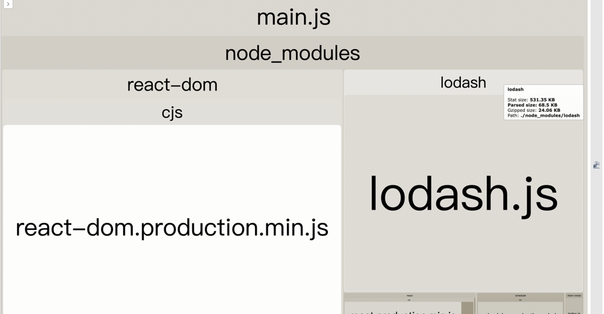
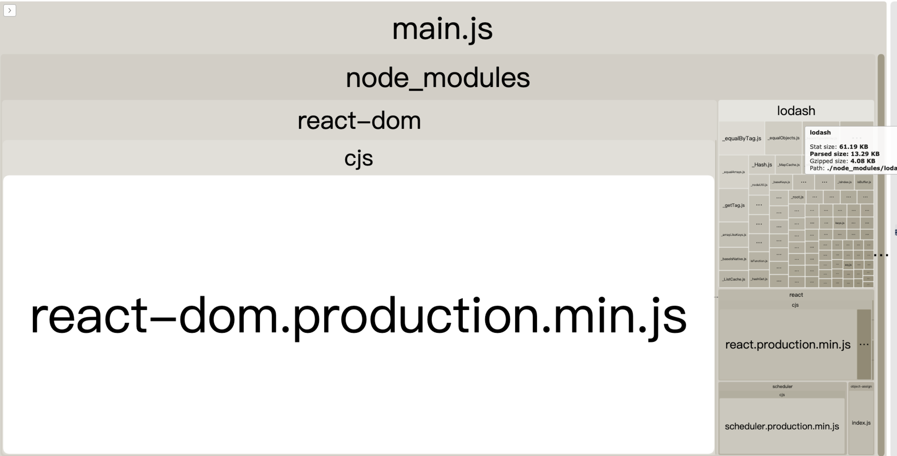

Webpack与Vite学习记录01
Webpack Tree Shaking
来自于 Webpack 中文官方文档描述
tree shaking 是一个术语，通常用于描述移除 JavaScript 上下文中的未引用代码(dead-code)。它依赖于 ES2015 模块语法的 静态结构 特性，例如 import 和 export。这个术语和概念实际上是由 ES2015 模块打包工具 rollup 普及起来的。 Webpack 2 正式版本内置支持 ES2015 模块（也叫做 harmony modules）和未使用模块检测能力。新的 Webpack 4 正式版本扩展了此检测能力，通过 package.json 的 "sideEffects" 属性作为标记，向 compiler 提供提示，表明项目中的哪些文件是 "pure(纯正 ES2015 模块)"，由此可以安全地删除文件中未使用的部分。
上述描述可能有点抽象, 举个栗子:
关于 lodash 的 import
众所周知, lodash 是一个工具函数库, 在平时开发中能够为我们提供很多便利. 但因为 lodash 在 2012 年便开源, 历史较为久远, 可能有多种缘故, 导致目前 lodash 本身并不是使用的 es module. 所以在使用 Webpack Tree Shaking 时, 会出现一些问题.
前置作业:
这里先配置一个 Webpack + react 的最基本环境.
package.json:
{
"name": "lodash_test_Webpack",
"version": "1.0.0",
"main": "index.js",
"license": "MIT",
"scripts": {
"start": "Webpack serve --mode=development",
"build": "Webpack --mode=production"
},
"dependencies": {
"lodash": "^4.17.21",
"lodash-es": "^4.17.21",
"react": "^17.0.2",
"react-dom": "^17.0.2"
},
"devDependencies": {
"@babel/core": "^7.17.7",
"@babel/preset-react": "^7.16.7",
"babel-loader": "^8.2.3",
"Webpack": "^5.70.0",
"Webpack-bundle-analyzer": "^4.5.0",
"Webpack-cli": "^4.9.2",
"Webpack-dev-server": "^4.7.4"
}
}
入口文件 main.js:
import { render } from 'react-dom';
import App from './app.jsx';
const mountNode = document.getElementById('app');
render(<App />, mountNode);
app.jsx:
const App = () => {
return <div>hello react</div>;
};
export default App;
Webpack.config.js
const BundleAnalyzerPlugin =
require('Webpack-bundle-analyzer').BundleAnalyzerPlugin;
module.exports = {
entry: './main.js',
output: {
filename: '[name].js',
path: __dirname + '/dist',
},
module: {
rules: [
{
test: /\.(js|jsx|ts|tsx)$/,
exclude: /node_modules/,
use: [
{
loader: 'babel-loader',
},
],
},
],
},
plugins: [new BundleAnalyzerPlugin()],
};
.babelrc:
{
"presets": [
[
"@babel/preset-react",
{
"runtime": "automatic"
}
]
]
}
可以看到在 Webpack 配置中使用了 BundleAnalyzerPlugin 这样一个插件, 简单说明下该插件作用.
该工具是一个可以分析打包后文件结果的视觉化套件, 有了该工具后就可以清楚的从视觉化的图案了解到每次打包后的文件大小, 用来分析 Webpack Tree Shaking 后的结果.
分析使用不同的方式 import lodash 的结果
第一种方式: 不指定 function 的路径
修改 app.jsx, 在组件中引入 lodash
import { isEqual } from 'lodash';
const App = () => {
console.log(isEqual({ a: 'b' }, { c: 'd' }));
return <div>hello react</div>;
};
export default App;
打包后的文件结构: 
可以看到, 明明在项目中只使用了 isEqual 这一个 function, 结果 lodash 打包后的文件大小却足足有 531kb, 不禁让人怀疑, isEqual 是一个多么伟大的函数...
第二种方式: 指定 function 的路径
import isEqual from 'lodash/isEqual';
打包后的文件结构: 
可以看到这个时候打包后的 lodash 仅有 61kb 了.
为什么两种 import 的方式会导致 bundle size 不一样
lodash 是一个使用 UMD 为模块的构建的, 这意味着 lodash 并不满足在 webpack 中的 tree-shaking 必须是 es module 的条件. 所以第一种方式实际上会导入完整的 lodash, 最终导致 bundle size 莫名的巨大. 而第二种方法就是只导入了一个文件, 再从文件中拿出我们需要的 isEqual, 如此一来最后打包处的文件大小便是正常的.
可是如果都要这样写代码会很麻烦, 毕竟 vscode 自动导入会按照第一种方式导入. 当然 lodash 官方也有考虑到这个问题, 推出了 es module 版本的 lodash-es.
为什么 webpack tree-shaking 使用的是 es module?
因为在 CommonJS、AMD 、UMD 中的导入都可能是非确定性的, 因此无法静态分析以有效消除死代码.
举个栗子:
const flag = false;
if (flag) {
const lodash = require('lodash');
}
vite tree-shaking
vite 的构建生产环境使用的是 rollup, 相比于 webpack, rollup 总是能够打出更小、更快的宝. 并且 rollup 也是基于 es module, 相比于 webpack 使用的 CommonJS 更加的高效.